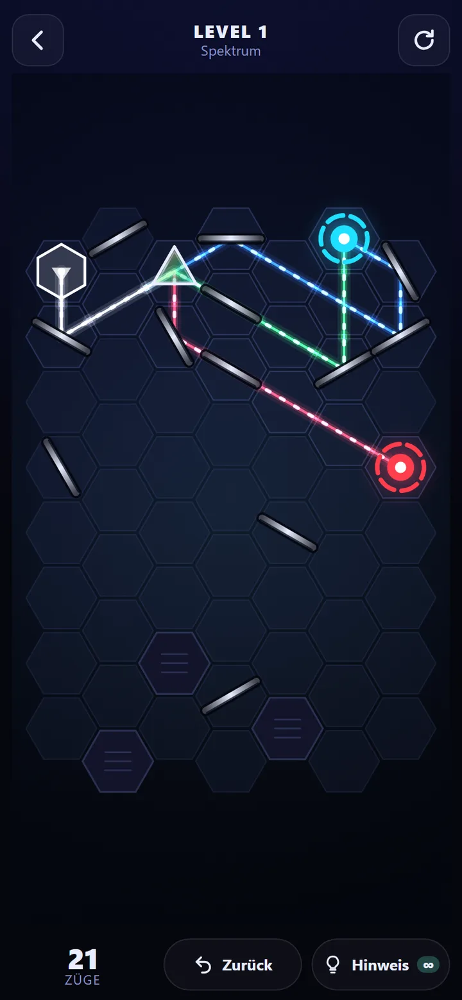
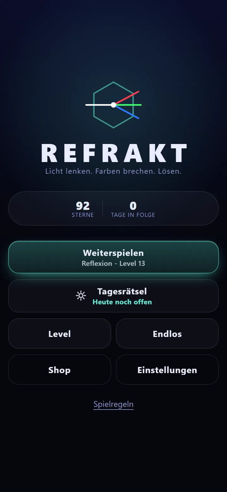
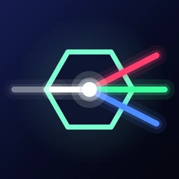
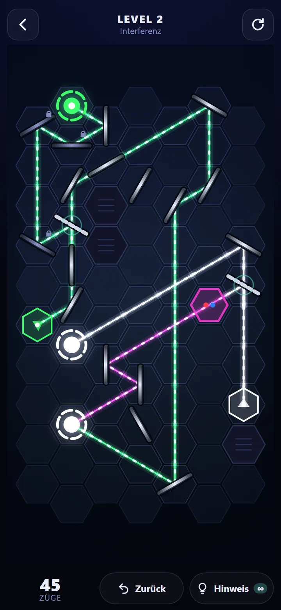
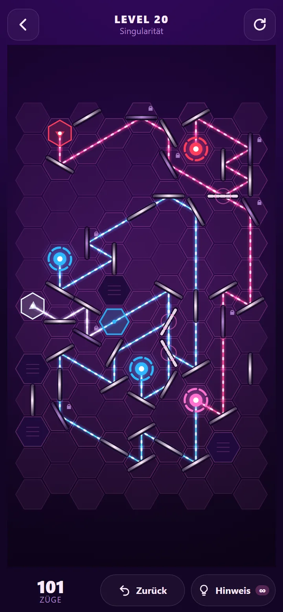

Indie-Spielestudio
Ruhige Denkspiele für zwischendurch.
SLMX Interactive entwickelt kleine Spiele für Android: offline spielbar, ohne Zeitdruck und ohne Konto.
REFRAKT ansehen


REFRAKT
Lichtpuzzle für Android
Drehe Spiegel, bis jeder Strahl sein Ziel trifft. Ein Prisma zerlegt Weiß in Rot, Grün und Blau, und Farben mischen sich auf ihrem Weg.
- 120
- Level in sechs Kapiteln
- Täglich
- ein neues Rätsel mit Serie
- 6
- Farbwelten
- Offline
- ohne Konto, in sechs Sprachen


Wie wir Spiele bauen
- Offline zuerst
- Kein Konto, kein eigener Server. Spielstände bleiben auf deinem Gerät.
- Kein Zeitdruck
- Keine Energieleisten und keine Wartezeiten. Gespielt wird im eigenen Tempo.
- Einmal zahlen
- Werbung lässt sich mit einem einmaligen Kauf entfernen. Kein Abo, keine Folgekosten.
Fragen, Feedback oder einen Fehler gefunden?
Schreib uns eine E-Mail. Rückmeldungen fließen direkt in die nächsten Updates.
slmxinteractive@gmail.com